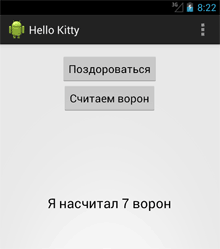
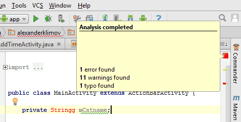

На предыдущем занятии мы немного поработали с кнопкой. Сегодня рассмотрим работу с обработкой щелчков подробнее.
Можете использовать старый проект или создать новый проект с стандартными настройками.
В прошлый раз мы использовали ImageButton. Сегодня будем работать с обычной кнопкой. В режиме Design подведите курсор к элементу Button и перетащите его на форму. В результате ваших действий на форме появится стандартная кнопка с настройками по умолчанию. В правой части экрана у вас имеется окно Properties, в котором вы можете настроить необходимые свойства для кнопки. По своей старой привычке я присвоил свойству id новое значение buttonHello вместо стандартного button. Если временно переключиться в режим Text, то увидите, что на самом деле атрибут имеет значение @+id/buttonHello. Студия немного экономит время для установки идентификаторов, а в Eclipse приходилось писать значение полностью. Естественно, если вы редактируете свойства в текстовом виде, то вам тоже надо придерживаться этого стандарта. Свойству Text присвойте текст Поздороваться. Будет отлично, если вы добавите этот текст через ресурсы. В учебных примерах я буду использовать текст прямо в свойствах для экономии места, но вы должны привыкать писать код правильно.
Если вы открыли предыдущий проект, то там уже был компонент TextView с текстом Hello, World (если вы создали новый проект). Компонент TextView является текстовой меткой для вывода текста, который нельзя редактировать. В метке будем выводить приветствие после щелчка кнопки. В окне свойств удаляем текст из свойства Text, чтобы в текстовой метке ничего не было. Проследите, чтобы у него был идентификатор. Если в окне свойств ничего нет, то добавьте свой идентификатор, например, textView (@+id/textView).
Если вам не нравится взаимное расположение элементов, то можете на форме перетаскивать элементы, меняя их местами.
Будем считать, что интерфейс программы готов - у нас есть кнопка для нажатия и текстовая метка для вывода сообщений.
Теперь нужно научиться писать код для щелчка кнопки. Переключитесь с режима Design на режим Text и найдите тег <Button>. Добавьте к нему еще одну строчку:
<Button
android:id="@+id/buttonHello"
android:layout_width="wrap_content"
android:layout_height="wrap_content"
android:layout_alignParentLeft="true"
android:layout_alignParentTop="true"
android:onClick="onClick"
android:text="Поздороваться" />
На самом деле это можно было сделать и через графическую модель. Переключитесь обратно в режим Design и найдите в свойствах кнопки пункт OnСlick. Там будет прописано имя метода, которое мы задали через XML. Пользуйтесь любым удобным вам способом.
Таким образом мы определили событие onClick для кнопки (щелчок) и теперь осталось написать обработчик события. Вы уже знаете, как в Android Studio быстро создать заготовку. В текстовом режиме нажимаем комбинацию Alt+Enter и шаблон готов.
public void onClick(View view) {
}
Вставим код.
public void onClick(View view){
TextView helloTextView = (TextView)findViewById(R.id.textView);
helloTextView.setText("Hello Kitty!");
}
Впрочем, это код нам уже знаком по предыдущему занятию. Есть небольшое отличие. Текстовую метку мы объявляем и присваиваем ссылку на нужный компонент сразу в методе щелчка. Приложение у нас простое и доступ к текстовой метке больше нигде не осуществляется. Поэтому нет нужды объявлять переменную на уровне класса и инициализировать её в методе onCreate(). Если вы набирали текст самостоятельно, то у вас всё получится. Если просто скопировали и получили ошибки, то разбирайтесь сами. Я лентяям не помогаю.
Раньше в Eclipse метод для щелчка писался вручную, а теперь создаётся автоматически. Радуемся.
Запускаем проект и нажимаем на кнопку, чтобы увидеть результат. Можете изменить текст по своему желанию, например, на Ты кто такой? Давай, до свидания!, но это сообщение будет выглядеть мягко говоря, странным.
Полный текст кода будет выглядеть следующим образом.
// Если этот код работает, его написал Александр Климов,
// а если нет, то не знаю, кто его писал.
package ru.alexanderklimov.hellokitty;
import android.app.Activity;
import android.os.Bundle;
import android.view.Menu;
import android.view.MenuItem;
import android.view.View;
import android.widget.TextView;
public class MainActivity extends Activity {
@Override
protected void onCreate(Bundle savedInstanceState) {
super.onCreate(savedInstanceState);
setContentView(R.layout.activity_main);
}
public void onClick(View view){
TextView helloTextView = (TextView)findViewById(R.id.textView);
helloTextView.setText("Hello Kitty!");
}
}
Ещё раз обратите внимание на строчку TextView helloTextView = (TextView)findViewById(R.id.textView);. В интернете есть популярная забава Найди кота. Метод findViewById() переводится как НайдиКомпонентПоИдентификатору и применяет тот же подход - вы указываете в параметре идентификатор ресурса и программа ищет подходящий компонент. В дальнейшем вы постоянно будете использовать данный код в своих программах.
Новички на первых порах часто делают элементарную ошибку - помещают строчку инициализации объекта до метода setContentView(). Запомните, сначала нужно вывести шаблон (R.layout.activity_main), а только потом кнопки, текстовые поля, переключатели и т.д. В нашем случае используется отдельный метод для кнопки, который формируется после метода setContentView(). Позже, в других проектах вы увидите стандартные приёмы инициализации объектов.
На самом деле, способ обработки щелчка кнопки, который я вам показал, является относительно новым для разработчиков. Google рекомендует использовать данный способ как удобный, требующий меньше кода и понятный для чтения. Но тем не менее вам придётся сталкиваться со старым способом, который берет свои корни от Java. Поэтому необходимо изучить и второй способ, чтобы понимать другие примеры.
Добавьте в проект новую кнопку. Если первую кнопку мы добавляли перетаскиванием элемента Button с панели инструментов, то на этот раз мы попробуем создать кнопку вручную. Откройте файл activity_main.xml в режиме редактора кода и скопируйте код для первой кнопки. Потом с новой строки вставьте скопированный текст и подправьте несколько атрибутов, например, так.
<Button
android:id="@+id/buttonCrowsCounter"
android:layout_width="wrap_content"
android:layout_height="wrap_content"
android:layout_alignParentLeft="true"
android:layout_below="@+id/buttonHello"
android:text="Считаем ворон" />
Я поменял для кнопки текст и идентификатор, а также некоторые параметры, отвечающие за положение кнопки на экране. Переключитесь в графический режим и посмотрите, как выглядит кнопка. Обратите внимание, что строку типа android:onClick="buttonCrowsCounter_Click" мы уже не используем. Если вас не устраивает положение кнопки, то перетащите её в другое место.
Снова открываем файл MainActivity.java и пишем следующий код сразу после объявления класса и до метода onCreate():
private Button mCrowsCounterButton;
Во время набора студия будет пытаться угадать, что вы хотите ввести. Активно используйте подсказки. Например, уже при первом вводе символа B студия предложит несколько вариантов на эту букву. Если нужное слово находится первым в списке, то нажимайте клавишу Enter, иначе выберите нужное слово из списка и потом уже нажимайте Enter. Это удобно при наборе длинных имён классов и переменных.
Google разработал целое руководство по наименованию переменных. Например, закрытая переменная на уровне класса должна начинаться с символа m (member), а далее идёт понятное название с заглавной буквы. Давайте попробуем придерживаться этого стиля.
После строчки setContentView(R.layout.activity_main); пишем:
mCrowsCounterButton = (Button)findViewById(R.id.buttonCrowsCounter);
Ещё раз напоминаю, не копируйте текст со страницы, а вводите текст вручную. Так вы быстрее освоите программирование, кроме того научитесь пользоваться системой подсказок и уменьшите количество опечаток.
Переходим к самому важному - обработчику щелчка кнопки. Нам понадобится дополнительная переменная-счётчик mCount, которая будет содержать число подсчитанных ворон (её необходимо разместить выше метода onCreate() рядом с переменной mCrowsCounterButton).
private int mCount = 0;
Теперь пишем обработчик, активно используя всплывающие подсказки для быстрого набора. Код добавляется в методе onCreate() после других строк, написанных ранее в этом методе.
Попробую описать, как использовать автодополнение. Сначала начинаем вводим первые символы слова mCrowsCounterButton (можно маленькими буквами) и нажимаем Enter, если видим, что нужная подсказка появилась. После этого слова ставим точку и должны появиться опять подсказки, которые относятся к данной переменной. Начинаем вводим первые буквы слова setOnClickListener. Здесь тоже проблем обычно не возникает. На данный момент у нас получилась строка mCrowsCounterButton.setOnClickListener();. Ставим курсор внутри круглых скобок и набираем new OnClickListener. Здесь важно набрать символ O в верхнем регистре. Тогда у вас появится нужная подсказка типа OnClickListener{...} (android.view.View). Нажимаем Enter и получаем нужную заготовку, внутри которой вставляем код:
mCrowsCounterButton.setOnClickListener(new View.OnClickListener() {
@Override
public void onClick(View v) {
mInfoTextView.setText("Я насчитал " + ++mCount + " ворон");
}
});
Ранее мы объявили переменную helloTextView внутри метода onClick(), из которого она недоступна в других методах. Поэтому поступим с ней так же, как с кнопкой - объявим текстовую метку на уровне класса и инициализируем её в методе onCreate(). Сделайте это самостоятельно, создав переменную с именем mInfoTextView.
Запускаем приложение и начинаем щёлкать по кнопке. При каждом щелчке счётчик mCount будет увеличиваться на единицу и эта информация будет отображаться на экране.
Нет смысла дублировать код для одной текстовой метки. Поэтому для первой кнопки, которая здоровалась, код можно сократить.
public void onClick(View view) {
mInfoTextView.setText("Hello Kitty!");
}
Мы познакомились с новым способом обработки щелчка кнопки. Какой способ вы предпочтёте - зависит от ваших привычек и вкуса. Более того, есть ещё один способ, о котором можно прочитать в отдельной статье о кнопках.

Теперь у вас есть чрезвычайно полезное приложение Счётчик ворон. Если преподаватель вас неожиданно спросит на занятии, почему вы смотрите в окно с рассеяным видом, вы можете смело достать свой телефон и сказать, что заняты очень важным делом - считаете ворон.
Впрочем, программа получилась у нас универсальной, можно считать не только ворон за окном.
На первых порах новички делают элементарные ошибки - опечатки, копирование куска кода без его понимания, пишут не в том месте и т.д. Студия пытается по мере возможностей подсказать вам, но не все обращают внимание на предупреждения, а потом пишут письма с просьбой разобраться. Небольшой ликбез по нахождению ошибок. В редакторе кода в верхнем правом углу есть прямоугольник. Он может быть зелёным (идеальный код), жёлтым (не смертельно, но лучше исправить) и красным (ошибка в коде, программа не запустится).
Ваша задача - стремиться к зелёному цвету. Жёлтый цвет желательно просматривать и решать самостоятельно, нужно ли исправлять код. Если вы понимаете в чём проблема, то исправьте. Если не понятно, то оставьте. Предупреждения не всегда бывают по делу, иногда их можно игнорировать. Понимание придёт с опытом и практикой.
Ниже показан случай, когда я сделал опечатку в названии класса String.

Помимо прямоугольника, там же ниже есть зарубки с такими же цветами. Подведите курсор мыши к любой из зарубок и увидите подсказку о характере ошибки или предупреждения. Щелчок по зарубке перенесёт вас в нужное место в документе.